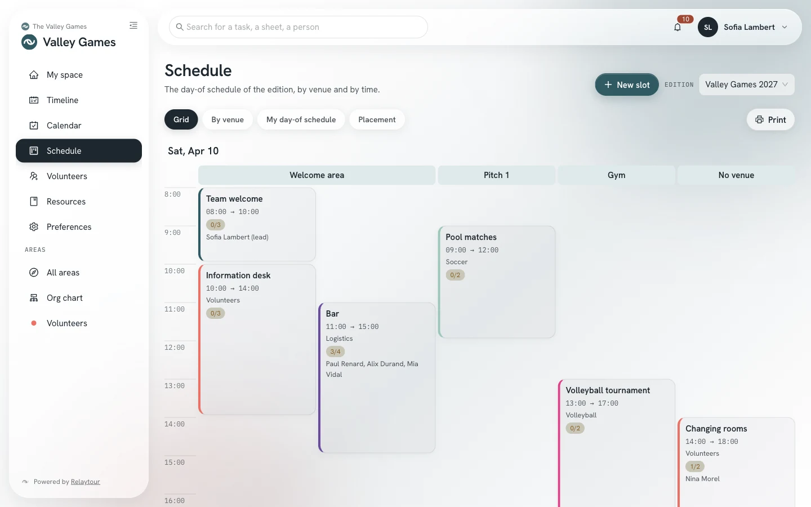
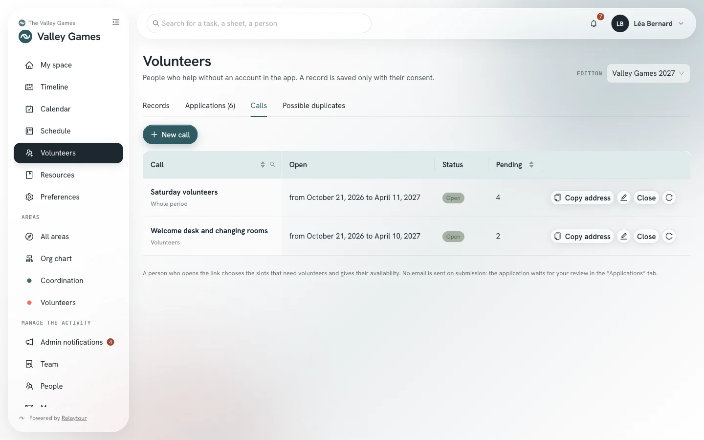
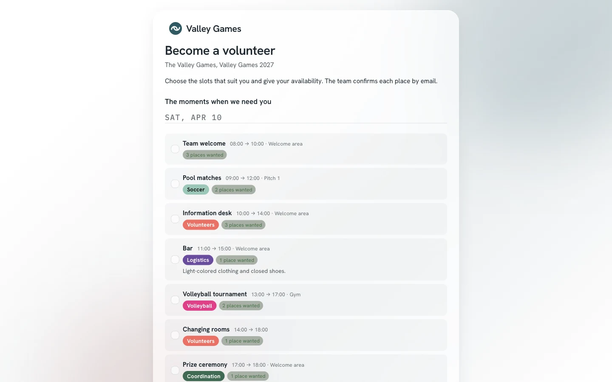
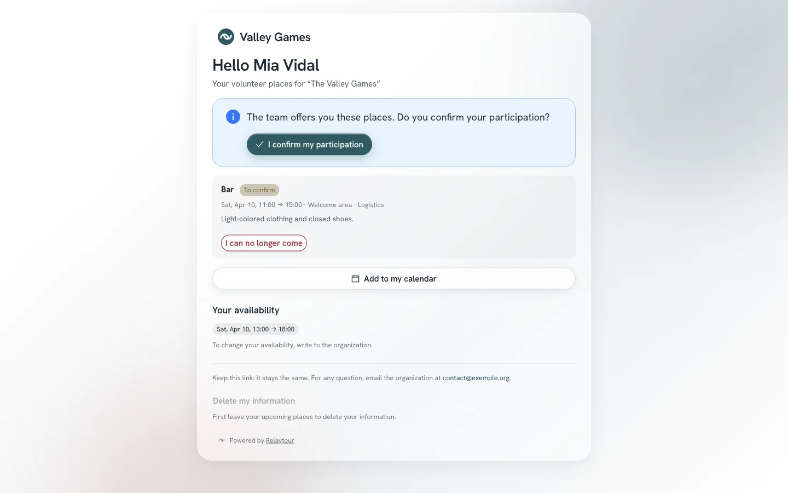
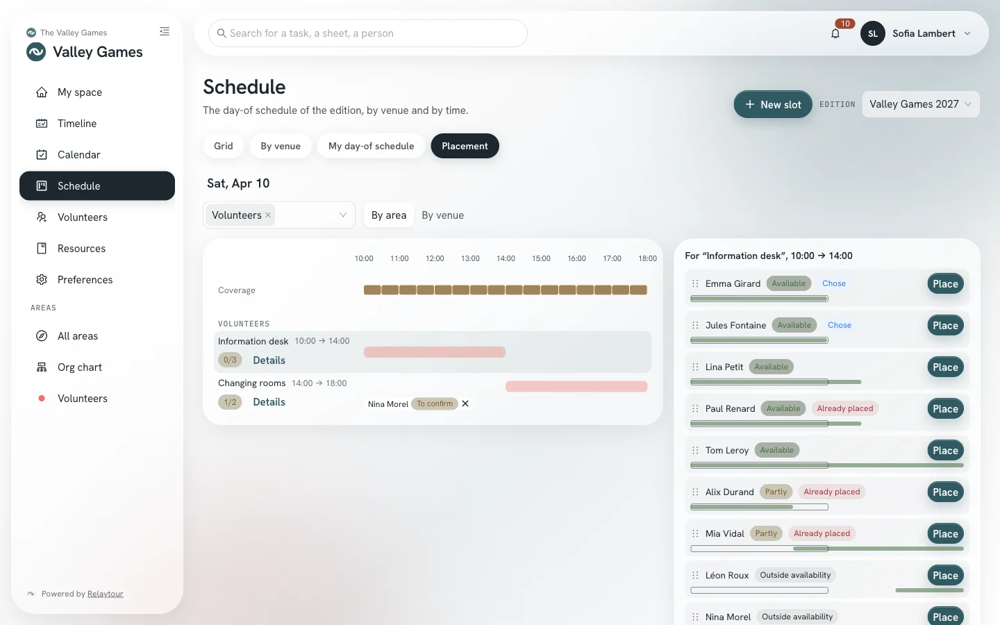
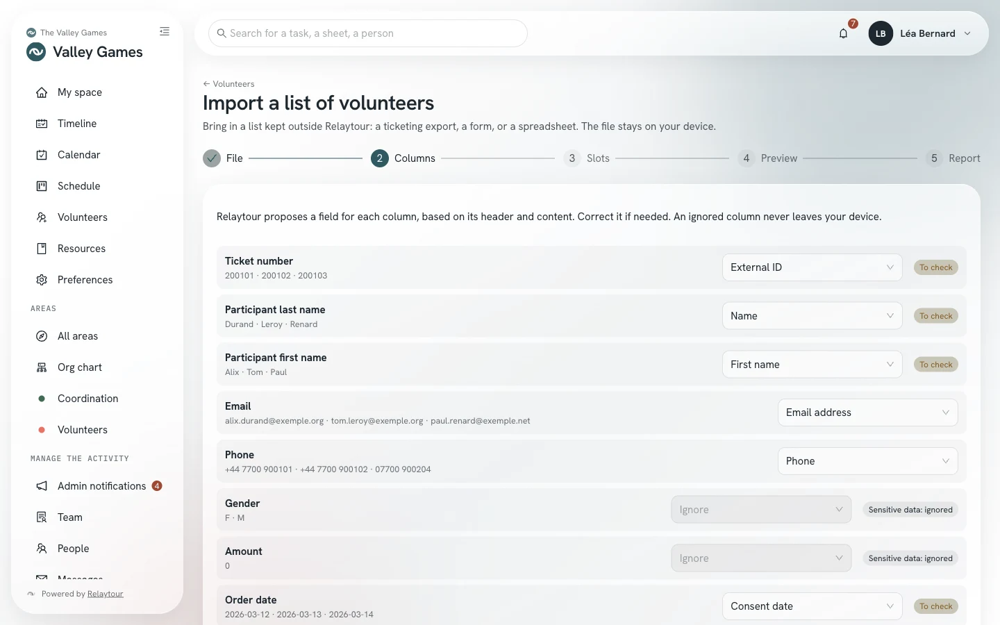
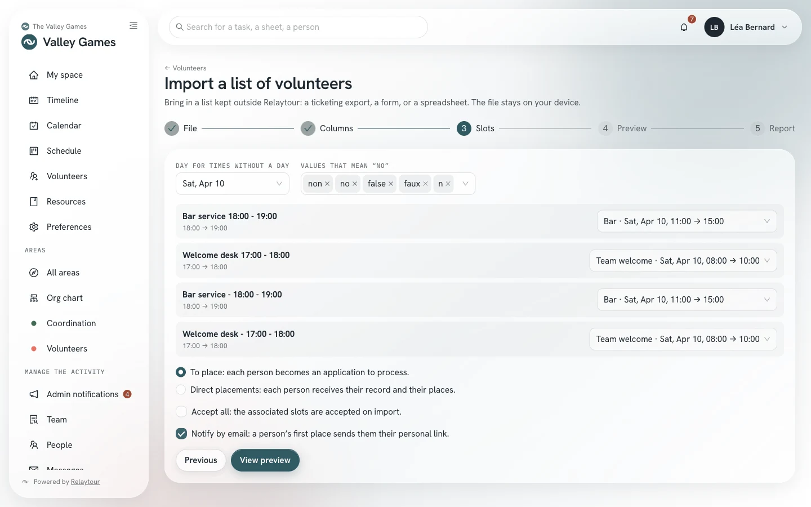
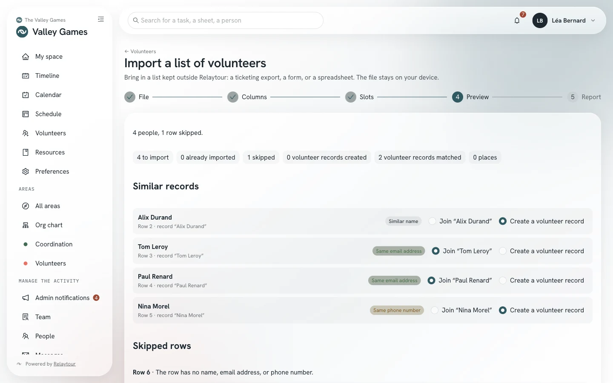
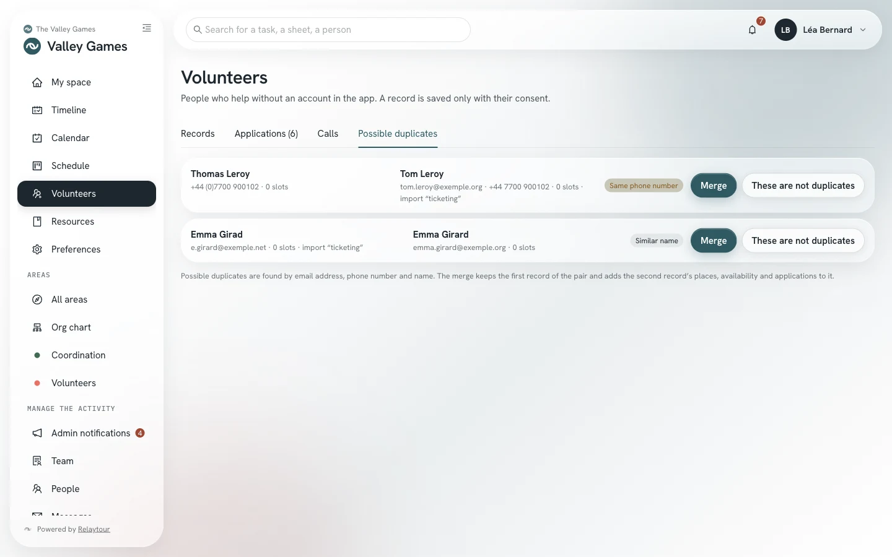

Volunteers apply through the public address of a call. You process their applications, then place them in the schedule slots that need more people.
This guide complements the “Schedule” and “Volunteers” sections of the coordinators’ user guide. It is written for people who write in an area and for activity admins.
Starting point
A volunteer’s journey
Relaytour sends no email until the team has decided. An email address entered on the public page receives nothing before one of its slots is accepted.
1. You open a call
You set the helpers wanted in your slots. Then you open a call and share its address: poster, social network, newsletter.
2. The person applies
They choose slots, give their availability, and check the consent box. Their application waits for your review. No email is sent.
3. You accept
You accept a slot from the application queue or from the “Placement” view. The person then receives a single email with their personal link.
4. They confirm
The link opens their volunteer page. There they confirm their participation with a button. Opening the link confirms nothing.
5. You track coverage
The “Placement” view shows the hours that need more people. You place available people there, whether they applied or are already on file.
Screen by screen
From the schedule to the confirmed place
Addresses start with the identifier of the displayed activity, for example /rencontres/benevoles. The word “edition” becomes “season” or “term” depending on the kind of activity.
Prepare the slots
/<activity>/programme
A slot appears in a call only if it is looking for helpers. You set this number in the slot window, under “Volunteers”. People placed as leads do not count.
Helpers wantedThe number of helpers the slot is looking for, 200 at most. An unconfirmed place already counts.
Volunteer instructionsThe assignment, the meeting point, what to wear. This text is public, unlike the slot description.
The schedule grid and list show each slot’s gauge: “0/3” means three helpers wanted and none placed.

The day-of schedule in grid view, with each slot’s gauge.
Instructions that contain a phone number or a personal address are not published. Write an organization role address instead.
Open a call
/<activity>/benevoles?onglet=appels
A call opens applications on part of the schedule, between two dates. The “Calls” tab of the “Volunteers” screen lists the period’s calls, their state, and the number of pending applications.
The scope of a call determines which slots are offered:
Whole periodAll slots that need helpers. Only activity admins open this call. The person can also offer to help wherever people are missing.
An areaThe slots of an area where you write.
A slotA single slot, for a direct link. A slot with no area falls to the activity admins.

The period’s calls, as seen by an activity admin.
New callChoose the scope, the call name, the opening and closing dates, and the introduction text. The address is copied on save.
Copy addressCopy the public address again at any time. It stays the same until you request a new one.
CloseReopenClose the call before its closing date, then reopen it if needed. Applications already received stay.
New addressReplace the address, for example after sharing it too widely. The old address stops working.
The closing date falls at the end of the period’s last day at the latest. A period has at most twenty open calls. Archiving the period closes its calls.
The call page
/benevoles/<secret address>
The call page can be read without an account, on a phone or a computer. It presents the organization, the activity, the period, and your introduction text. It then lists the offered slots, by day.
Each slot shows its time, its venue, its area, its instructions, and the state of its helpers: “3 places wanted”, or “full” with a waiting list. The page shows no name of any placed person.

The page of a call covering the whole period, opened by its address.
The person checks one or more slots. The page warns them when two chosen slots overlap. They then add their availability: a day, a start time, and an end time, then optional notes.
They give their name, their email address, and an optional phone number, then check the consent box. A message on screen confirms that the application was received.
An email address has a single pending application per call: a second submission completes the first. The page never says whether an address has already applied. Submissions are limited per email address, per IP address, and per call.
Process applications
/<activity>/benevoles?onglet=candidatures
The “Applications” tab gathers the period’s applications. The “To process” tab shows those awaiting a decision. The “Handled” and “Withdrawn” tabs keep the others.
Each application shows the person’s contact details, their availability, their notes, and their message. It then lists the chosen slots, each with its state.
The application queue, with the Accept and Decline buttons for each slot.
AcceptPlace the person as a helper in the slot. The volunteer record is created, or joins the record that has the same email address. The place waits for the person’s confirmation.
DeclineSet aside one chosen slot. No email is sent.
Decline the entire applicationSet aside all slots still pending. The person can submit a new application.
A slot chosen after its helpers are reached goes onto the waiting list. You can still accept it: the screen then flags the excess. A freed place moves nobody up without your decision.
A received application notifies you in the app, once a day at most and without a name. A period’s applications are deleted when it is archived.
The personal link and the volunteer page
/benevole/<personal link>
A record’s first place sends a single email. It names the organization, the activity, and the slots, and carries the person’s personal link. This link stays the same from one email to the next.
The link opens the volunteer page. There the person reads their places, with their times, venues, and instructions, then their availability. They confirm their participation with the “I confirm my participation” button.

The page of a volunteer whose place awaits their confirmation.
Add to my calendarDownload their places in iCalendar format, for Outlook, Google, or Apple.
I can no longer comeLeave an upcoming place. People who write in the slot’s area are notified.
Delete my informationDelete their record, once their upcoming places are left.
Once the email address is confirmed, the person receives an email when their places change: a place added, removed, or moved. Changes are grouped over two minutes. An added place stays to be confirmed.
A record receives these emails when it has an email address and the “Notify by email” option, checked by default. Uncheck the option for a person you reach another way: their places are then created as confirmed.
The window of a record, in the “Records” tab, holds the personal link. A person who can read contact details but cannot edit the record opens it with the “Personal link” button in the “Participation” column.
Copy linkCopy the link to send it by text or message. A record without a link gets one.
Resend by emailResend the link to a person who has not confirmed. This resend can be done only once.
New linkReplace the link. The old one stops working, and no email is sent.
A place still to be confirmed seven days after acceptance, or the day before its slot, appears as “unconfirmed”. You then decide whether to release it or keep it.
Place people in the schedule
/<activity>/programme?vue=repartition
The “Placement” view of the “Schedule” screen cross-references helpers wanted, places, and availability. It is shown to people who write in at least one area.
The Coverage bar splits the day into 30-minute intervals. Each interval shows the helpers wanted, the confirmed places, the unconfirmed places, and the available volunteers. An interval that falls short is colored.
The chart shows the slots along the hours axis, by area or by venue. The “Unplaced volunteers” panel shows the available people and their availability windows, on the same axis.

The “Placement” view of a coordinator, with the “Information desk” slot selected.
Choose a slot: the panel ranks people by their availability windows. Marks show who chose this slot, who is on the waiting list, and who is already placed at the same time.
AvailablePartlyOutside availabilityA window covers the whole slot, only part of it, or none of it.
PlacePlace the person in the selected slot. On a computer, you can also drag them onto the slot.
RemoveRemove a place from the chart. The person returns to the unplaced volunteers.
Hovering over a name shows the person’s notes, their message, their choices, and their places. Placing an application accepts the slot, like the “Accept” button.
A placement outside the person’s availability, overlapping another, or beyond the helpers wanted asks for confirmation. On a phone, the view lists the slots that fall short, each with its unplaced volunteers.
Existing lists
Import a list kept elsewhere
Your volunteers are sometimes already registered elsewhere: an online ticketing service, a form, a spreadsheet. The import brings them into Relaytour without retyping.
Import a list
/<activity>/benevoles/import
The “Import a list” button on the “Volunteers” screen opens a five-step wizard. It is shown to activity admins and to people who write in an area.
Your browser reads the file: a CSV or an XLSX workbook of 2 MB, 5,000 rows, and 200 columns at most. Only the mapped columns are sent to the server, and the file is not kept anywhere.
FileChoose the period, the scope, and the file, then name the source (“Ticketing of August 7”). An admin imports for the whole schedule; a coordinator imports for their area.
ColumnsCheck the field suggested for each column: first name, last name, email address, phone, notes, positions and time slots, external ID.
SlotsMatch each position or time slot in the file to a schedule slot, to a simple availability, or ignore it.
PreviewReview the summary, decide on similar records, and confirm the people’s consent, then import.
ReportRead the number of people imported, records created or joined, and places.

The “Columns” step for a fictional ticketing export.
Relaytour suggests a field from each column’s header and content. A “To check” mark flags an uncertain suggestion. A column for gender, health, or payment is always ignored.
Save an import mapping to reuse your choices with the next file from the same source. A mapping keeps the headers and the matches, never the people’s data.
The file can describe positions in three ways. One column per position or time slot, where a filled cell means “chosen”. One cell that lists several positions and times. Several rows per person, joined by a grouping column.

The “Slots” step: each position in the file joins a schedule slot.
A time without a day receives the day chosen at the top of the step. Also enter the values that mean “no” in your tool, for example “non” or “false”.
To placeEach person becomes an application to process, in a call specific to the source. The “Accept all” option accepts the matched slots in one step.
Direct placementsEach person receives their record and their places in the matched slots. This mode requires at least one matched slot.
Notify by emailSend the personal link at a person’s first place. Uncheck the option if your team contacts its volunteers itself.

The preview announces the summary before anything is written.
The preview changes nothing. It counts the people to import, those already imported, and the rows set aside. A row with no name, no email address, and no phone is set aside, like a batch of anonymous tickets.
A person with the email address of an existing record joins it automatically. For the same phone number or a similar name, you choose “Join” or “Create a volunteer record”. The rows set aside can be downloaded as CSV.
No email is sent on import. An external ID, such as a ticket number, makes the import repeatable: an updated file adds only the new people. The consent date is the import date, unless a column is matched.
Possible duplicates and merging
/<activity>/benevoles?onglet=doublons
The “Possible duplicates” tab of the “Volunteers” screen matches records that seem to describe the same person. It is shown to activity admins only, because merging affects records created by others.

Two pairs of records to review after an import.
Same email addressSame phone numberSimilar nameThe reason for the match, from most to least certain.
MergeChoose the name, email address, and phone number to keep, then combine the two records into one.
These are not duplicatesSet the pair aside after confirmation. It will not be suggested again.
The merge keeps the first record of the pair. It combines the second record’s places, availability, and applications into it, then deletes the second. The notes are joined end to end.
The personal link and the confirmation follow the email address kept. Two places in the same slot become one.
Rights
Who sees what
Applications carry personal contact details. Only the people who can process them read them.
Activity admins
They open calls of any scope and read all applications, with the email address and phone number. They accept for slots with no area.
Coordinators
They open calls for their area. They read the applications that choose one of their slots, and only those choices.
Unplaced volunteers
People from a call or an import covering the whole period are visible to anyone who writes in an area: name, availability windows, notes, choices, and places. The email address and phone number stay restricted.
A volunteer record keeps the contact-detail reading rules described in the coordinators’ user guide. An unconfirmed place counts as a place for these rules.